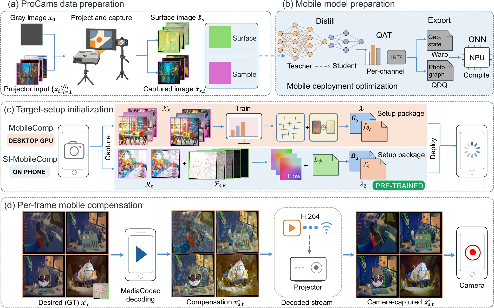

MobileComp: Real-Time Full Projector Compensation on Mobile Devices
Abstract
Projecting an image onto a nonplanar, textured surface changes both its shape and its colour. Full projector compensation modifies the projector input so that the captured projection resembles the desired image. Existing learning-based methods typically require setup-specific training on a desktop GPU and are computationally expensive to run on a smartphone.
MobileComp prepares a compact model on a desktop GPU and performs geometric correction and photometric compensation on the phone. Its setup-independent variant, SI-MobileComp, uses shared pretrained weights and initializes each new setup on the phone. Both methods overlap CPU frame preparation with inference on the phone’s neural processing unit. Across eight target setups, they retain competitive camera-captured image quality and reach 72.30 and 64.76 FPS, respectively, on a Xiaomi 13 Pro. Three desktop-oriented baselines each run below 1 FPS on the same device.
Video Presentation
Camera-Captured Results
Select a scene and drag the divider to compare the uncompensated and compensated projections. The reference images show the desired frame and the bare surface.
Choose a scene


Method

Setup. MobileComp loads a setup-specific sampling grid and compensation model prepared on a desktop GPU. SI-MobileComp instead estimates the grid and caches surface features from phone-captured references, using the same pretrained weights across setups.
Playback. Both methods reuse their setup state throughout the session. The CPU applies the geometric warp while the neural processor corrects the preceding frame’s colour and intensity. The phone streams the compensated video to the projector.